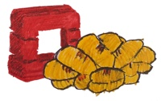

Gnocchi – Metric as a Service¶
{kind=link}
Gnocchi is a multi-tenant timeseries, metrics and resources database. It provides an HTTP REST interface to create and manipulate the data. It is designed to store metrics at a very large scale while providing access to metrics and resources information and history.
You can read the full documentation online at http://gnocchi.xyz.
Key Features¶
- HTTP REST interface
- Horizontal scalability
- Metric aggregation
- Measures batching support
- Archiving policy
- Metric value search
- Structured resources
- Resource history
- Queryable resource indexer
- Multi-tenant
- Grafana support
- Nagios/Icinga support
- Statsd protocol support
- Collectd plugin support
Community¶
You can join Gnocchi’s community via the following channels:
- Bug tracker: https://bugs.launchpad.net/gnocchi
- IRC: #gnocchi on Freenode
- Mailing list: openstack-dev@lists.openstack.org with [gnocchi] in the Subject header.
Why Gnocchi?¶
Gnocchi has been created to fulfill the need of a time series database usable in the context of cloud computing: providing the ability to store large quantities of metrics. It has been designed to handle large amount of measures being stored, while being performant, scalable and fault-tolerant. While doing this, the goal was to be sure to not build any hard dependency on any complex storage system.
The Gnocchi project was started in 2014 as a spin-off of the OpenStack Ceilometer project to address the performance issues that Ceilometer encountered while using standard databases as a storage backends for metrics. More information are available on Julien’s blog post on Gnocchi.